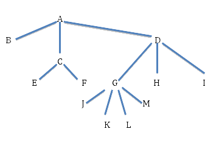
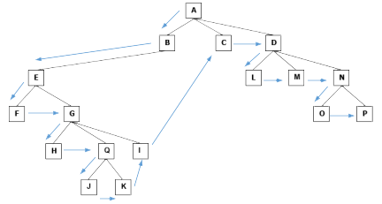

Cuestionario (se aprueba con el 70%). Pregunta 1. ¿Qué es un árbol dirigido? Respuestas Opción 1 a. Un árbol dirigido es un árbol con un vértice distinguido como raíz y tal que cada arista apunta del vértice más cercano a la raíz al más lejano. Opción 2 b. Es un árbol G con mínimo peso, es decir cuya suma de pesos sea mínima. Opción 3 c. a y b con correctas. Opción 4 d. Ninguna de las anteriores. Pregunta 2. ¿Cómo se clasifican los arboles dirigidos? Respuestas Opción 1 a. Árboles no dirigidos, arboles B. Opción 2 b. Árboles binarios, arboles B, arboles rojo negro. Opción 3 c. Árboles n-arios, arboles B. Opción 4 d. A y C son correctas. Pregunta 3. ¿Cuáles son los elementos de un árbol dirigido? Respuestas Opción 1 a. D y C son correctas. Opción 2 b. Bipartidos, Planos, Conexos, Ponderados Opción 3 c. Nodo, raíz, hojas o terminales, padre, hijo, hoja, rama. Opción 4 d. Vértices, Aristas, Lazos, Valencias Pregunta 4. ¿En qué consiste la arborescencia? Respuestas Opción 1 a. Es el número de vértices del grafo, el cardinal del conjunto X de vértices: |X| Opción 2 b. Es un subgrafo de un grafo parcial de G Opción 3 c. Es un árbol dirigido con un nodo llamado raíz, tal que existe un único camino desde la raíz a cualquier otro nodo del árbol. Opción 4 d. Solo A y B son verdaderas. Pregunta 5. ¿Dónde se pueden utilizar los árboles N-arios? Respuestas Opción 1 a. Sistemas Operativos, Inteligencia Artificial, Juegos tipos tres líneas. Opción 2 b. Mapas Conceptuales, Organigramas, Gramáticas. Opción 3 c. A y B son correctas. Opción 4 d. Matemáticas. Pregunta 6. ¿Cuál es el orden, niveles, altura, y peso del siguiente árbol N-ario?  Respuestas Opción 1 a. Orden 4, Niveles = a, b, c, d, e, f, g, h, i, j, k, l, m, Altura = 4, Peso = 13 Opción 2 b. Orden 5, niveles = a, b, c, d, e, f, g, h, i, j, k, l, m, altura= 7, peso= 10 Opción 3 c. Orden 4, niveles = a, b, c, d, e, f, g, h, i, j, k, l, m, altura= 5, peso= 6 Opción 4 d. Orden 7, niveles = a, b, c, d, e, f, g, h, i, j, k, l, m, altura= 5, peso= 10 Pregunta 7. ¿Cuál es el recorrido inorden del árbol N-ario de la pregunta anterior? Respuestas Opción 1 a. b, e, f, c, j, k, l, m, g, h, i, d, a Opción 2 b. e, f, c, j, l, m, g, h, i, a, d, k. Opción 3 c. k, d, a, i, h, g, m, l, j, c, f, e. Opción 4 d. b, a, e, c, f, j, g, k, l, m, d, h, i. Pregunta 8. ¿El recorrido pre orden del siguiente árbol n-ario es:?  Respuestas Opción 1 a. a, b, e, f, g, h, q, j, k, i, c, d, l, m, n, o, p Opción 2 b. a, b, e, f, g, h, q, j, k, m, n, o, p, i, c, d, l Opción 3 c. a, b, e, f, g, h, p, i, c, d, l, j, k, m, n, o Opción 4 d. a, e, b, f, h, g, p, i, c, d, l, j, k, o, n, m Habilitar JavaScript